Magnetism Simulation Framework
Spirit runs on most Linux, macOS and Windows systems and even in your browser!
Monte Carlo with an adaptive cone scheme, LLG dynamics including finite temperature and spin currents (both STT and SOT)
Geodesic nudged elastic band calculations, minimum mode following, harmonic transition state theory
With everything implemented in a single framework, all methods are easy to use and can be quickly combined with eachother
Spirit is a cross-platform C++ code and has graphical user interfaces running on Linux, macOS, Windows and even the Web! You can also script it using Python.
Run parallelisations using OpenMP for CPUs or CUDA for GPUs to significantly speed up your calculations. Spirit provides fast and precise dipolar interactions using parallelised FFTs.
Complex states may emerge in 3D systems, requiring advanced visualisations for effective work.
This often makes post-processing redundant and significantly decreases required developer effort.
Even for 2D systems, it is highly useful to have realtime visualisations available, enabling one to immediately assess the state of a simulation.
Whether simulating or post-processing, prototyping or automating, small or large systems, Spirit provides the right tools
Fast and with highly useful realtime visualisations. Use this tool to be more effective and save time on complex tasks. Immediately understand what is going on in your system and save yourself the manual effort of post-processing your simulations.
Spirit makes it very easy to create Python scripts for your calculations and take full control over what happens. Use an input file or call the Python API to configure the geometry and parameters of your system - the choice is yours.
All features of the user interfaces can be reproduced in Python. It is a great tool for automation of complex simulations.
We provide example scripts for some typical use cases and the documentation includes a full reference of the Python API.
### Import Spirit modules
from spirit import state
from spirit import configuration
from spirit import simulation
from spirit import io
cfgfile = "input/input.cfg"
quiet = False
with state.State(cfgfile, quiet) as p_state:
### Read an image from file
# io.image_read(p_state, "input/spins.ovf")
### Homogeneous background with a skyrmion in the center
configuration.plus_z(p_state)
configuration.skyrmion(p_state, 5.0, phase=-90.0)
### LLG dynamics simulation using Depondt's Heun-like solver
LLG = simulation.METHOD_LLG
DEPONDT = simulation.SOLVER_DEPONDT
simulation.start(p_state, LLG, DEPONDT)
### Save the final result to a file
# io.image_write(p_state, "output/final.ovf")
Spirit also runs in most current browsers, including mobile. The core library of Spirit, as well as the VFRendering visualisations can be transpiled to web assembly (WASM) using Emscripten. This allows you to simulate spin dynamics right in your browser!
You can use this tool for demonstration or take a quick look at spin textures you calculated with only a few clicks.